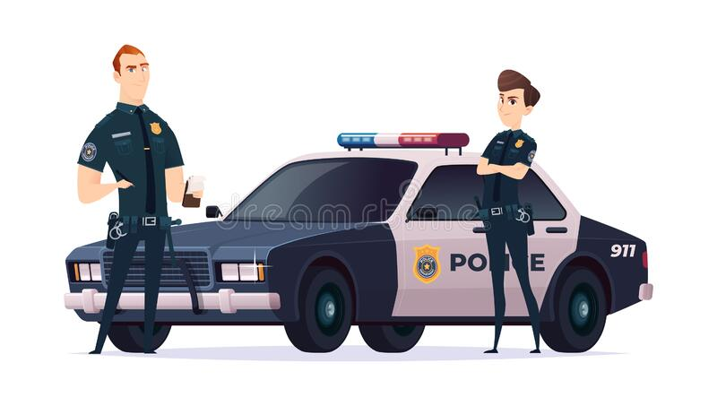
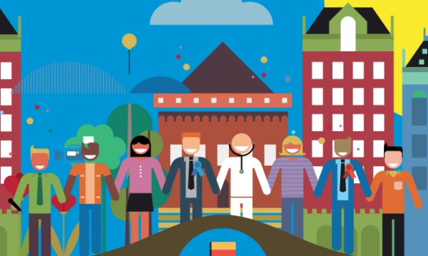

In this project I started by creating an ER diagram from the need of a company and converted the ER diagram to
schemas and then created a Data base for the company and also queried the existing data .
In this project I collected and cleaned the data that was gotten from customers within a year for the yearly audit so as to help stakeholders gain easy insight into the data by creating visualization to help improve the company's successes.
In this project I used a football dataset of the English premier league 2021/2022 season and gained several
inisght from the data like finding that Manchester United was the youngest team in that season.

From a bike comapany datsets I cleaned the data and brought out neccessary insight, I also created a dashboard for easy
visualization to help stake holders gain better and immediate insight into the company's running.